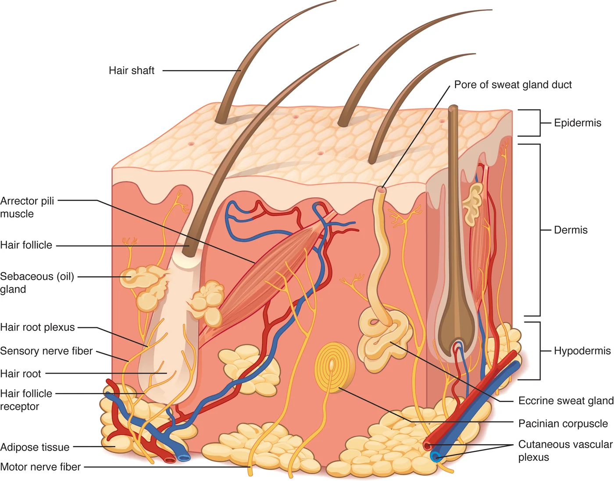

The Integumentary System
TEAS objective S.1.8 · Human Anatomy & Physiology
What the TEAS expects: you can name the layers of the skin and what each contains, list the functions of the skin, and describe the accessory structures (hair, nails, glands).
1. Two skin layers, plus the layer beneath
- Epidermis (top): stratified squamous epithelium (a stack of flat epithelial cells). It has no blood vessels; its cells get nutrients by diffusion from the dermis below. New cells are made in the deepest layer (stratum basale) and pushed upward. As they rise they fill with the tough protein keratin (these cells are called keratinocytes) and die, forming the protective outer layer (stratum corneum), which is constantly shed. Melanocytes in the basal layer make melanin, the pigment that protects against UV radiation.
- Dermis (middle): tough connective tissue with collagen (strength) and elastic fibers (stretch). It contains blood vessels, nerves and touch receptors, hair follicles, and sweat and oil glands.
- Hypodermis (subcutaneous layer, below the skin proper): mostly fat (adipose tissue). It insulates, cushions and anchors the skin to underlying muscle.

Tap or click the figure to open it full size.
Check 1: A paper cut stings but doesn't bleed. Which layer did it stay within? Answer at the bottom of the page.
2. What the skin does
- Protection: a barrier against microbes, water loss, injury and UV light.
- Temperature regulation: when you are hot, dermal blood vessels dilate and sweat glands release sweat, which carries heat away as it evaporates. When you are cold, the vessels constrict to keep warm blood deeper.
- Sensation: receptors for touch, pressure, pain and temperature.
- Vitamin D synthesis: UV light starts the conversion of a cholesterol-based molecule in the skin into an inactive form of vitamin D; the liver and kidneys then activate it. Active vitamin D helps the intestine absorb calcium.
- Excretion: small amounts of wastes leave in sweat.
Check 2: On a cold day your fingers look pale. What are the dermal blood vessels doing, and why? Answer at the bottom.
3. Accessory structures
- Hair: grows from a follicle in the dermis. The arrector pili muscle pulls the hair upright ("goosebumps").
- Nails: plates of hard keratin that protect the fingertips.
- Sweat (sudoriferous) glands:
- Eccrine glands, all over the body, produce watery sweat for cooling.
- Apocrine glands, in the armpits and groin, become active at puberty; bacteria breaking down their secretion cause body odor.
- Sebaceous (oil) glands: secrete sebum into hair follicles to soften skin and hair and slow water loss.
Common traps
- Thinking the epidermis has blood vessels. It doesn't; that is why a shallow cut doesn't bleed.
- Getting the layer count confused. The skin itself is the epidermis plus the dermis. The hypodermis (subcutaneous layer) lies just beneath the skin and is often listed with them as a third layer. Know all three and what each contains.
- Getting the temperature response backward. Hot: vessels dilate and you sweat. Cold: vessels constrict.
- Thinking melanin cools the skin. Melanin protects against UV damage.
Learn it properly
- Layers of the skin: OpenStax Anatomy and Physiology 2e, Section 5.1 Layers of the Skin: OpenStax (opens in a new tab)
- Hair, nails and glands: Section 5.2 Accessory Structures of the Skin: OpenStax (opens in a new tab)
- Functions: Section 5.3 Functions of the Integumentary System: OpenStax (opens in a new tab)
Check answers
- The epidermis. It has no blood vessels, but nerve endings reach into its lower layers, so it can sting.
- Constricting. Less warm blood near the surface means less heat lost to the cold air.
ESCC TEAS Prep · Original study material written for Eastern Shore Community College. Figures from OpenStax, Anatomy and Physiology 2e, licensed CC BY 4.0.